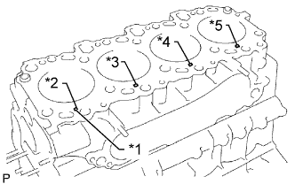
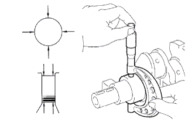

БЛОК ЦИЛИНДРОВ > ПРОВЕРКА |
| 1. ПРОВЕРЬТЕ МАСЛОВПУСКНОЕ ОТВЕРСТИЕ БЛОКА ЦИЛИНДРОВ |
Проверьте масловпускное отверстие на наличие повреждений и засоров.
При необходимости замените масловпускное отверстие блока цилиндров.
| 2. ПРОВЕРЬТЕ ОБРАТНЫЙ МАСЛЯНЫЙ КЛАПАН В СБОРЕ |
Нажмите на шарик обратного масляного клапана деревянным прутком и проверьте, не заедает ли он.
| *1 | Шарик |
 | Нажмите |
| 3. ПРОВЕРЬТЕ МАСЛЯНУЮ ФОРСУНКУ № 1 В СБОРЕ |
Проверьте штуцер подачи масла № 1 на наличие повреждений и засоров.
При необходимости замените масляную форсунку № 1.
| 4. ОЧИСТИТЕ БЛОК ЦИЛИНДРОВ В СБОРЕ |
С помощью скребка для прокладок удалите остатки материала прокладки с верхней поверхности блока цилиндров.
Мягкой кистью и растворителем тщательно очистите блок цилиндров в сборе.
| 5. ПРОВЕРЬТЕ КОРОБЛЕНИЕ БЛОКА ЦИЛИНДРОВ |
Проверьте коробление.
С помощью прецизионной поверочной линейки и комплекта плоских щупов измерьте коробление поверхности блока цилиндров, которая соприкасается с головкой блока цилиндров.
Визуально проверьте цилиндры на наличие вертикальных царапин.
При наличии глубоких царапин расточите все 4 цилиндра. При необходимости замените блок цилиндров.
| 6. ПРОВЕРЬТЕ ОТВЕРСТИЕ ПОД ЦИЛИНДР |
|  |
Проверьте диаметр отверстия под цилиндр.
| *1 | Метка 1, 2 или 3 |
| *2 | № 1 |
| *3 | № 2 |
| *4 | № 3 |
| *5 | № 4 |
С помощью нутромера измерьте диаметр цилиндра в точках А, В и С в осевом направлении и направлении тяги.
| Параметр / Устройство | Заданные условия |
| Метка STD 1 | 96,00 - 96,01 мм (3,7795 - 3,7799 дюйма) |
| Метка STD 2 | 96,01 - 96,02 мм (3,7799 - 3,7803 дюйма) |
| Метка STD 3 | 96,02 - 96,03 мм (3,7803 - 3,7807 дюйма) |
| Наружный 0,50 | 96,50 - 96,53 мм (3,7992 - 3,8004 дюйма) |
| Наружный 0,75 | 96,75 - 96,78 мм (3,8090 - 3,8102 дюйма) |
| Наружный 1,00 | 97,00 - 97,03 мм (3,8189 - 3,8201 дюйма) |
| Параметр / Устройство | Заданные условия |
| Номинальный | 96,23 мм (3,7886 дюйма) |
| Наружный 0,50 | 96,73 мм (3,8083 дюйма) |
| Наружный 0,75 | 96,98 мм (3,8181 дюйма) |
| Наружный 1,00 | 97,23 мм (3,8280 дюйма) |
| *1 | Направление тяги |
| *2 | Осевое направление |
| *3 | Центр |
| Передняя сторона |
| *1 | Инструмент для снятия уступа |
| 7. ОЧИСТИТЕ ПОРШЕНЬ |
С помощью инструмента для очистки канавок или сломанного кольца очистите поршневые канавки.
Используя растворитель и щетку, тщательно очистите поршень.
| 8. ПРОВЕРЬТЕ ДИАМЕТР ПОРШНЯ |
 |
Микрометром измерьте диаметр поршня в следующих условиях: 1) под прямым углом к осевой линии поршня; 2) на указанном расстоянии от головки поршня.
| Параметр / Устройство | Заданные условия |
| Для моделей с DPF | 63,5 мм (2,50 дюйма) |
| Для моделей без DPF | 65,00 - 65,06 мм (2,5590 - 2,5593 дюйма) |
| Параметр / Устройство | Заданные условия |
| Метка STD 1 | 95,92 - 95,93 мм (3,7764 - 3,7768 дюйма) |
| Метка STD 2 | 95,93 - 95,94 мм (3,7768 - 3,7772 дюйма) |
| Метка STD 3 | 95,94 - 95,95 мм (3,7772 - 3,7776 дюйма) |
| STD O/S 0,50 | 96,42 - 96,45 мм (3,7960 - 3,7972 дюйма) |
| STD O/S 0,75 | 96,67 - 96,70 мм (3,8059 - 3,8070 дюйма) |
| STD O/S 1,00 | 96,92 - 96,95 мм (3,8157 - 3,8169 дюйма) |
| *1 | Метка размера |
| *2 | Метка внутреннего диаметра отверстия для поршневого пальца |
| *3 | Передняя метка (стрелка) |
| *4 | Расстояние |
 |
Микрометром измерьте диаметр поршневого пальца.
| Параметр / Устройство | Заданные условия |
| Метка A | 34,000 - 34,004 мм (1,3386 - 1,3387 дюйма) |
| Метка B | 34,004 - 34,008 мм (1,3387 - 1,3389 дюйма) |
| Метка C | 34,008 - 34,009 мм (1,3389 - 1,3391 дюйма) |
Проверьте посадку поршневого пальца.
Проверьте, чтобы при 80°C (176°F) поршневой палец можно было вставить в отверстие для поршневого пальца, надавив на него большим пальцем..
Если палец удается установить при более низкой температуре, замените поршень в комплекте с пальцем.
| 9. ПРОВЕРЬТЕ МАСЛЯНЫЙ ЗАЗОР ПОРШНЯ |
Измерьте диаметр отверстия под цилиндр в направлении тяги.
| *1 | № 1 |
| *2 | № 2 |
| *3 | № 3 |
| *4 | № 4 |
| *5 | Метка 1, 2 или 3 |
| *6 | Метка размера |
Отнимите от измеренного диаметра цилиндра измеренный диаметр поршня.
| 10. ПРОВЕРЬТЕ ЗАЗОР КАНАВКИ КОЛЬЦА |
С помощью комплекта плоских щупов измерьте зазор между новым поршневым кольцом и стенкой канавки кольца.
| Параметр / Устройство | Заданные условия |
| Поршневое кольцо № 1 (с DPF) | 0,091 - 0,135 мм (0,00358 - 0,00531 дюйма) |
| Поршневое кольцо № 2 | 0,090 - 0,135 мм (0,00354 - 0,00531 дюйма) |
| Маслосъемное кольцо | 0,030 - 0,075 мм (0,00118 - 0,00295 дюйма) |
| 11. ПРОВЕРЬТЕ ЗАЗОР РАЗРЕЗА ПОРШНЕВОГО КОЛЬЦА |
Вставьте поршневое кольцо в цилиндр.
С помощью поршня протолкните поршневое кольцо так, чтобы оно слегка выступало за нижний предел хода кольца, на расстоянии 120 мм (4,72 дюйма) от верхней части блока цилиндров.
С помощью комплекта плоских щупов измерьте зазор разреза.
| Параметр / Устройство | Заданные условия |
| Поршневое кольцо № 1 | 0,27 - 0,39 мм (0,0106 - 0,0154 дюйма) |
| Поршневое кольцо № 2 | 0,55 - 0,70 мм (0,0217 - 0,0276 дюйма) |
| Маслосъемное кольцо | 0,20-0,40 мм (0,00787-0,0157 дюйма) |
| Параметр / Устройство | Заданные условия |
| Поршневое кольцо № 1 | 0,85 мм (0,0335 дюйма) |
| Поршневое кольцо № 2 | 1,07 мм (0,0421 дюйма) |
| Маслосъемное кольцо | 0,77 мм (0,0303 дюйма) |
| 12. ПРОВЕРЬТЕ МАСЛЯНЫЙ ЗАЗОР ПОРШНЕВОГО ПАЛЬЦА |
С помощью индикатора часового типа для отверстий измерьте внутренний диаметр втулки шатуна.
| Параметр / Устройство | Заданные условия |
| Метка A | 34,012 - 34,016 мм (1,3390 - 1,3392 дюйма) |
| Метка B | 34,016 - 34,020 мм (1,3392 - 1,3393 дюйма) |
| Метка C | 34,020 - 34,024 мм (1,3393 - 1,3395 дюйма) |
| *1 | Метка внутреннего диаметра втулки шатуна A, B или C |
| *2 | Метка передней стороны |
Вычтите из измеренного диаметра поршневого пальца измеренный внутренний диаметр втулки.
| 13. ПРОВЕРЬТЕ ШАТУН В СБОРЕ |
Проверьте центровку шатуна с помощью устройства для проверки кривизны шатуна и комплекта плоских щупов.
Проверьте изгиб шатуна.
 |
Проверьте скручивание шатуна.
| 14. ПРОВЕРЬТЕ БОЛТ ШАТУНА |
С помощью штангенциркуля измерьте диаметр напряженной части болта.
| *1 | Часть, испытывающая напряжение |
| 15. ПРОВЕРЬТЕ УРАВНОВЕШИВАЮЩИЙ ВАЛ № 1 В СБОРЕ |
С помощью нутромера измерьте внутренний диаметр подшипника уравновешивающего вала.
| Параметр / Устройство | Заданные условия |
| № 1 | 42,000 - 42,020 мм (1,6535 - 1,6543 дюйма) |
| № 2 | 41,000 - 41,020 мм (1,6142 - 1,6150 дюйма) |
| № 3 | 32,000 - 32,020 мм (1,2598 - 1,2606 дюйма) |
| *1 | № 1 |
| *2 | № 2 |
| *3 | № 3 |
С помощью микрометра измерьте наружный диаметр коренных шеек уравновешивающего вала.
| Параметр / Устройство | Заданные условия |
| № 1 | 41,941 - 41,960 мм (1,6512 - 1,6520 дюйма) |
| № 2 | 40,931 - 40,950 мм (1,6115 - 1,6122 дюйма) |
| № 3 | 31,941 - 31,960 мм (1,2575 - 1,2583 дюйма) |
Вычтите наружный диаметр коренной шейки уравновешивающего вала из внутреннего диаметра подшипника уравновешивающего вала.
| Параметр / Устройство | Заданные условия |
| № 1 | 0,040-0,079 мм (0,00157-0,00311 дюйма) |
| № 2 | 0,050 - 0,089 мм (0,00197 - 0,00350 дюйма) |
| № 3 | 0,040-0,079 мм (0,00157-0,00311 дюйма) |
| Параметр / Устройство | Заданные условия |
| № 1 | 0,18 мм (0,00709 дюйма) |
| № 2 | 0,19 мм (0,00748 дюйма) |
| № 3 | 0,18 мм (0,00709 дюйма) |
| 16. ПРОВЕРЬТЕ УРАВНОВЕШИВАЮЩИЙ ВАЛ № 2 В СБОРЕ |
С помощью нутромера измерьте внутренний диаметр подшипника уравновешивающего вала.
| Параметр / Устройство | Заданные условия |
| № 1 | 42,000 - 42,020 мм (1,6535 - 1,6543 дюйма) |
| № 2 | 41,000 - 41,020 мм (1,6142 - 1,6150 дюйма) |
| № 3 | 32,000 - 32,020 мм (1,2598 - 1,2606 дюйма) |
| *1 | № 1 |
| *2 | № 2 |
| *3 | № 3 |
С помощью микрометра измерьте наружный диаметр коренных шеек уравновешивающего вала.
| Параметр / Устройство | Заданные условия |
| № 1 | 41,941 - 41,960 мм (1,6512 - 1,6520 дюйма) |
| № 2 | 40,931 - 40,950 мм (1,6115 - 1,6122 дюйма) |
| № 3 | 31,941 - 31,960 мм (1,2575 - 1,2583 дюйма) |
Вычтите наружный диаметр коренной шейки уравновешивающего вала из внутреннего диаметра подшипника уравновешивающего вала.
| Параметр / Устройство | Заданные условия |
| № 1 | 0,040-0,079 мм (0,00157-0,00311 дюйма) |
| № 2 | 0,050 - 0,089 мм (0,00197 - 0,00350 дюйма) |
| № 3 | 0,040-0,079 мм (0,00157-0,00311 дюйма) |
| Параметр / Устройство | Заданные условия |
| № 1 | 0,18 мм (0,00709 дюйма) |
| № 2 | 0,19 мм (0,00748 дюйма) |
| № 3 | 0,18 мм (0,00709 дюйма) |
| 17. ПРОВЕРЬТЕ КОЛЕНЧАТЫЙ ВАЛ |
Проверьте радиальное биение.
Установите коленчатый вал на V-образные призмы.
Индикатором часового типа измерьте радиальное биение на центральной шейке.
|  |
Проверьте коренные шейки и шатунные шейки.
Микрометром измерьте диаметр каждой коренной шейки и каждой шатунной шейки.
| Параметр / Устройство | Заданные условия |
| Метка 1 | 69,994 - 70,000 мм (2,7557 - 2,7559 дюйма) |
| Метка 2 | 69,988 - 69,994 мм (2,7554 - 2,7557 дюйма) |
| Метка 3 | 69,982 - 69,988 мм (2,7552 - 2,7554 дюйма) |
| U/S 0,25 | 69,745 - 69,755 мм (2,7459 - 2,7463 дюйма) |
| U/S 0,50 | 69,495 - 69,505 мм (2,7360 - 2,7364 дюйма) |
| Параметр / Устройство | Заданные условия |
| Метка 1 | 58,994-59,000 мм (2,3226-2,3228 дюйма) |
| Метка 2 | 58,988-58,994 мм (2,3224-2,3226 дюйма) |
| Метка 3 | 58,982-58,988 мм (2,3221-2,3224 дюйма) |
| U/S 0,25 | 58,745 - 58,755 мм (2,3128 - 2,3132 дюйма) |
| U/S 0,50 | 58,495 - 58,505 мм (2,3029 - 2,3033 дюйма) |
Для каждой коренной и для каждой шатунной шейки проверьте конусность и овальность, как показано на рисунке.
При необходимости отшлифуйте и притрите коренные шейки и/или шатунные шейки.
Отшлифуйте и притрите коренные шейки и/или шатунные шейки до окончательного уменьшенного диаметра (см. процедуры выше).
Установите новые подшипники уменьшенного размера коренных шеек и/или шатунных шеек.
| 18. ПРОВЕРЬТЕ УСТАНОВОЧНЫЙ БОЛТ КРЫШКИ ПОДШИПНИКА КОЛЕНЧАТОГО ВАЛА |
С помощью штангенциркуля измерьте диаметр установочного болта крышки подшипника коленчатого вала в зоне измерения.
| *1 | Диапазон измерений |